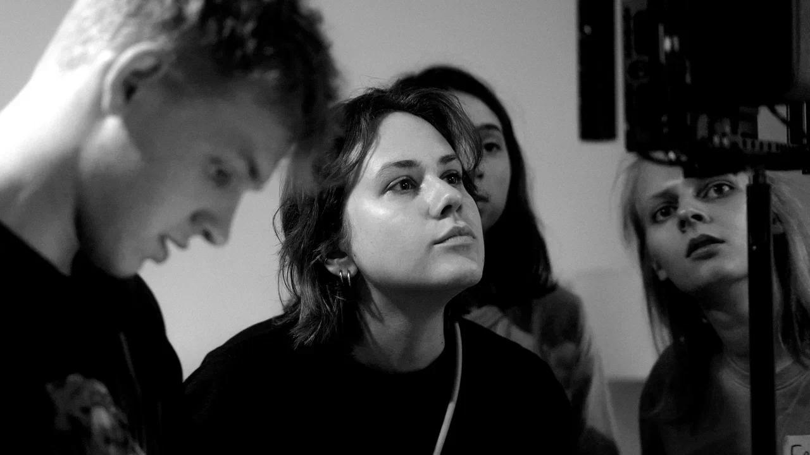

(Обо мне)
Ксения Некипелова
Режиссер кино
Ксения Некипелова — режиссер кино и междисциплинарный художник, работающая с игровым и документальным кино, перформансом и партиципаторным искусством.
Её практика исследует человеческие отношения, память и взаимодействие человека с пространством. Соединяя наблюдение и сконструированные ситуации, она использует кино как точку встречи изображения, текста, движения и коллективного опыта.
Авторский подход
Я снимаю игровое и документальное кино о том, как люди сближаются, помнят и ищут своё место. Драматургия моих работ рождается из пространства, жестов и случайных встреч. Я соединяю наблюдение с постановкой, оставляя место неожиданному.
